Acute pancreatitis: the debrief for week 9, Doubled up
Monday 07:40 · cubicle 6
Sixteen hours of pain, a sick bowl, and “I feel funny”.
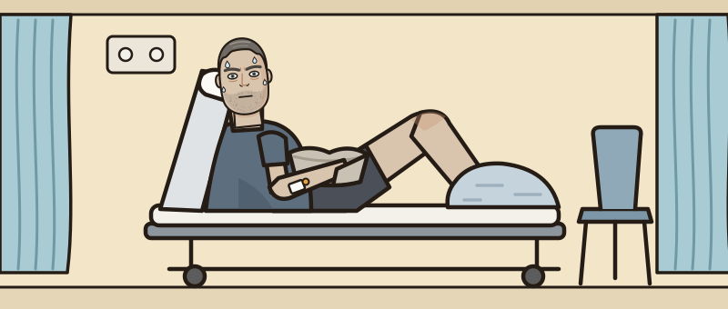

- Dean Marsden, 48, a plasterer, on his own.
- Pain since Sunday 15:00, at its worst within ten minutes, going through to his back. Vomiting more than ten times through the night.
- At triage: pulse 118, breathing 22, blood pressure 112/70, temperature 37.8 °C, pain 9 out of 10.
- His lipase came back at 2,310 U/L (normal 13 to 60).
- This page is about the pancreas. Debrief 2 is about why he felt “funny”.
Before anything goes wrong
The pancreas has two jobs, and it keeps its digestive juices switched off until they leave.
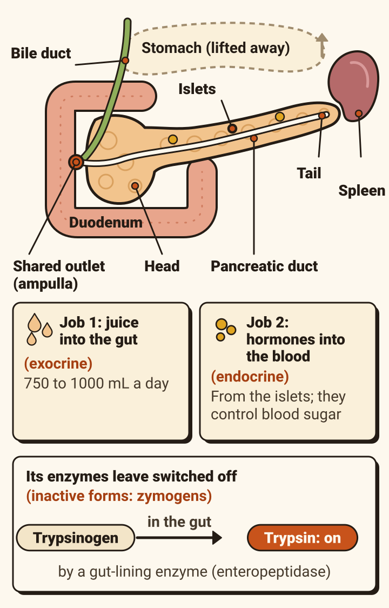
- Its protein-digesting enzymes leave the gland switched off (zymogens). In the gut, an enzyme in the gut lining (enteropeptidase, or enterokinase) turns trypsinogen into trypsin, which switches on the rest in a chain (a cascade).
- The pancreatic duct and the bile duct share one outlet into the duodenum (the ampulla). Remember it for gallstones.
Sunday 15:00
Pancreatitis starts when trypsin is switched on inside the gland, and the gland digests itself (autodigestion).
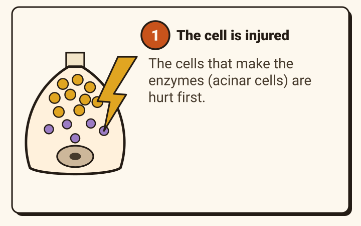
- It starts with injury to the cells that make the enzymes (acinar cells).
- Calcium builds up inside the injured cell.
- The enzyme packets and the cell’s waste-disposal packets (lysosomes) come together (co-localisation).
- Trypsinogen is turned into trypsin too early, inside the gland. The switched-on enzymes digest the gland itself (autodigestion) and set off inflammation.
07:15 · pulse 118, breathing 22
The fire spreads: inflammation in the gland becomes inflammation of the whole body (SIRS).
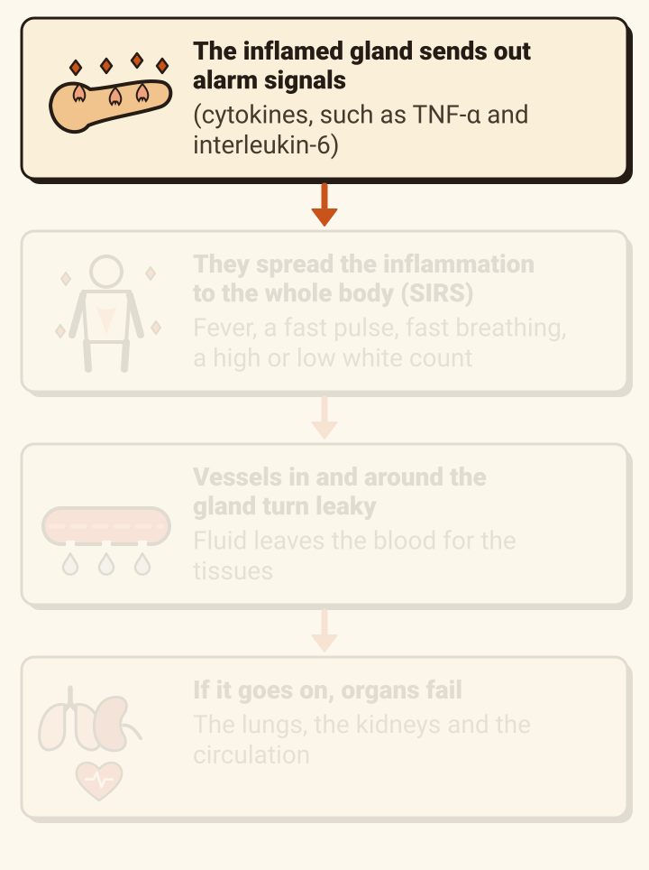
- The inflamed gland releases chemical alarm signals (cytokines), such as TNF-α and interleukin-6.
- The inflammation spreads to the whole body (systemic inflammatory response syndrome, SIRS): fever, a fast pulse, fast breathing.
- Blood vessels in and around the gland turn leaky (increased vascular permeability), and fluid leaves the blood for the tissues.
- When SIRS persists, the lungs, the kidneys and the circulation may fail.
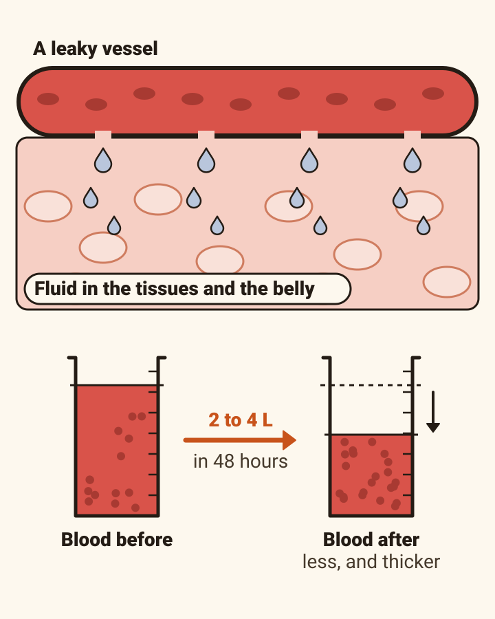
The blood concentrates: urea and haematocrit rise. A urea that rises in the first day goes with more organ failure and death.
The causes
Gallstones and alcohol cause three-quarters of it. Every cause gets in by one of three doors, and alcohol uses all three.
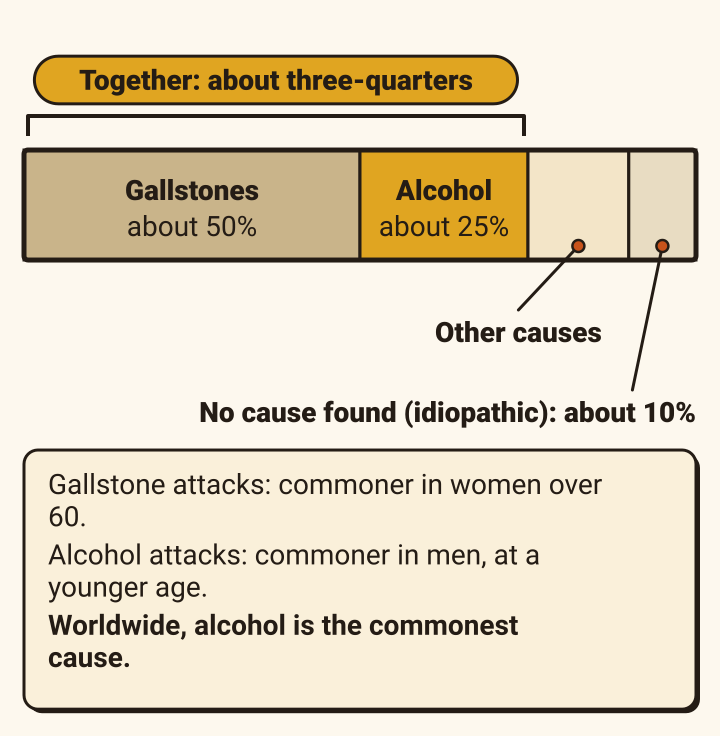
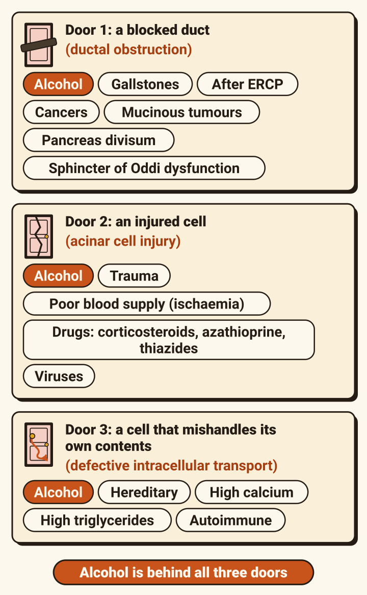
In the UK, about 15 to 42 people per 100,000 a year, and rising. The three doors are the three ways a cause starts the damage.
The commonest cause in the UK
A gallstone that blocks the duct switches the enzymes on inside the gland.
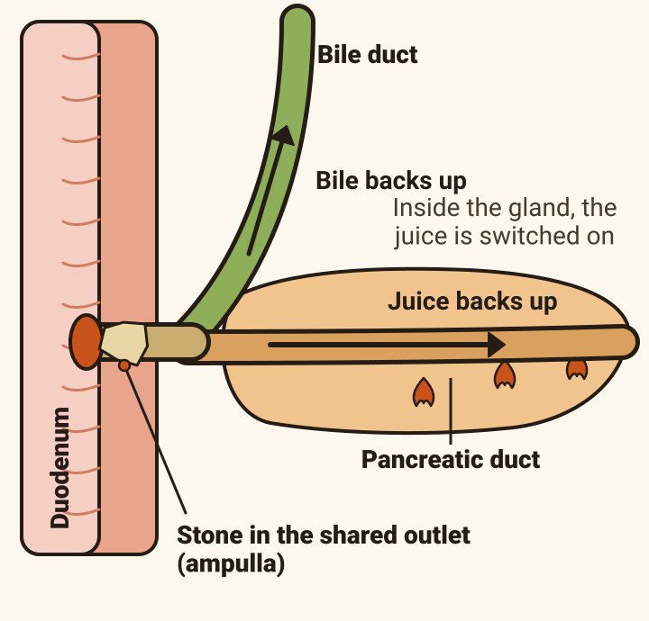
- A stone blocking the pancreatic duct switches the enzymes on, and the gland digests itself.
- An ALT of 150 or more within 48 hours of the pain starting points to gallstones (right 85% of the time). Dean’s ALT was 58.
- After a mild gallstone attack the gallbladder is removed in the same admission or within 2 weeks.
- Urgent ERCP (a camera through the mouth to the duct outlet) only for infected bile ducts (cholangitis) or a blocked bile duct.
110 to 120 units a week
Alcohol poisons the cell and plugs the ducts.
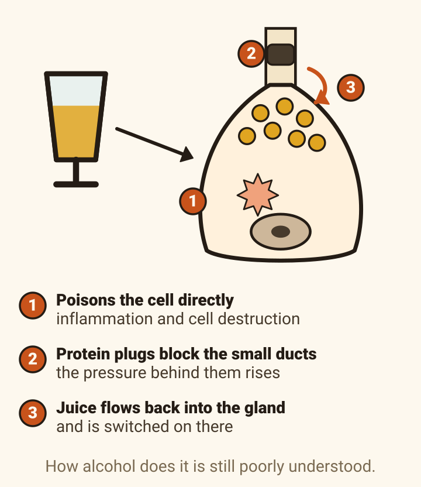
- To call an attack alcohol-related, more than five years of heavy drinking is needed: over about 50 g a day, which is about 6 UK units.
- NICE: do not assume it is the alcohol just because he drinks. So Dean’s ultrasound was still done: no gallstones.
Everything else
The rest of the list is short, but each one changes what you do.
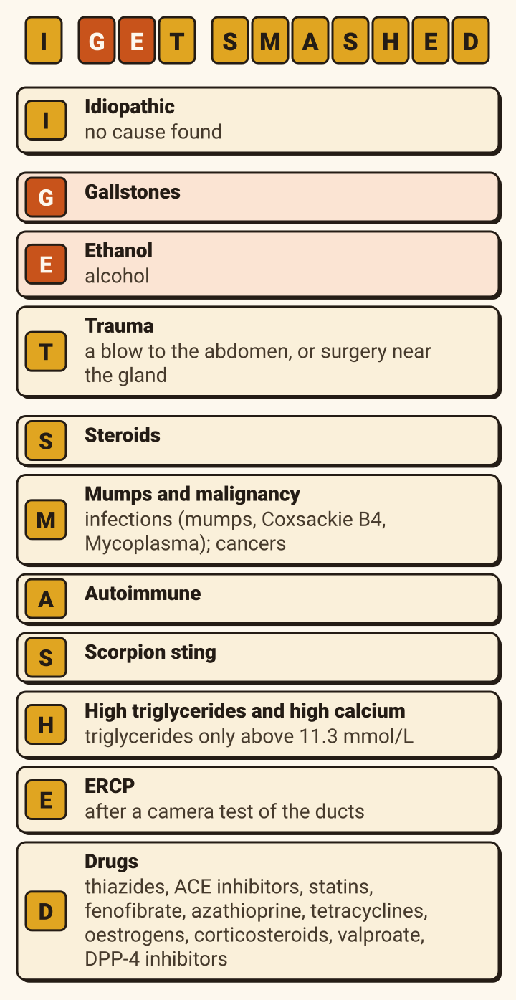
A memory aid, I GET SMASHED. Triglycerides count only above 11.3 mmol/L.
Triglycerides 3.4 · ibuprofen for six weeks
Did either of these cause Dean’s attack?
- His triglycerides were 3.4 mmol/L. He had taken ibuprofen two or three times a day for six weeks.
- Neither. Triglycerides cause pancreatitis only above 11.3 mmol/L.
- Ibuprofen (an NSAID) is on a children’s guideline’s list of drug causes, but not on the adult list in NICE’s summary. Drug causes are “more often falsely attributed”.
At its worst in ten minutes
Pain in the top of the belly, through to the back, with vomiting and a fast pulse.
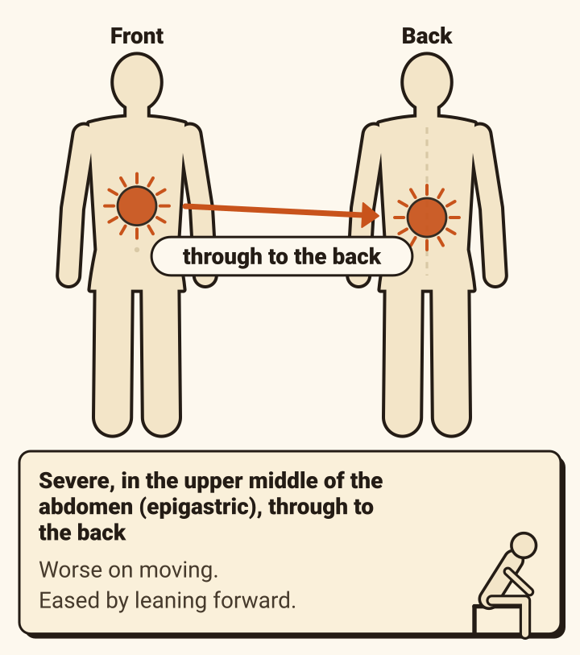
- Vomiting; sweaty, a fast pulse, fast breathing, signs of being dry (hypovolaemia); fever from the inflammation.
- A tender, perhaps swollen abdomen; quiet bowel sounds if the gut has stopped (ileus).
- When alcohol is the cause, the pain may start less suddenly and be harder to place. Dean’s was at its worst in ten minutes.
- Bruising around the navel (Cullen’s sign) or in the flanks (Grey Turner’s sign) is rare and late. It means bleeding behind the abdomen.
What else it could be
Three emergencies look the same from the end of the trolley. Dean was each of them until tested.
Tap each one.
Also on the list: a leaking aortic aneurysm, aortic dissection, a ruptured oesophagus.
Lipase 2,310 (13 to 60)
Two of three makes the diagnosis: the pain, an enzyme over three times normal, imaging.
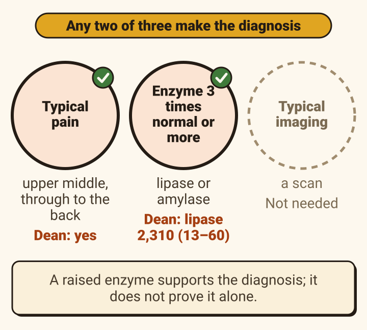
- Dean had the pain and the enzyme, so no scan was needed to make the diagnosis.
- The height of the enzyme has no relation to how severe the attack is. Dean’s was about 38 times the upper limit.
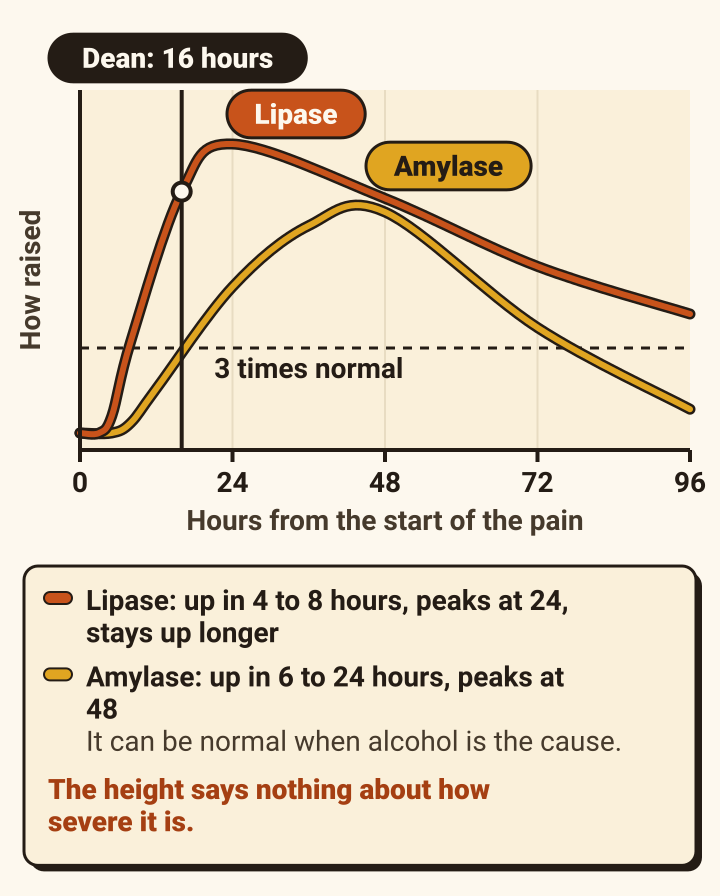
Send the lipase. Amylase can be normal when alcohol is the cause.
The first round
Every first test has a job, and most are about the cause and the danger, not the diagnosis.
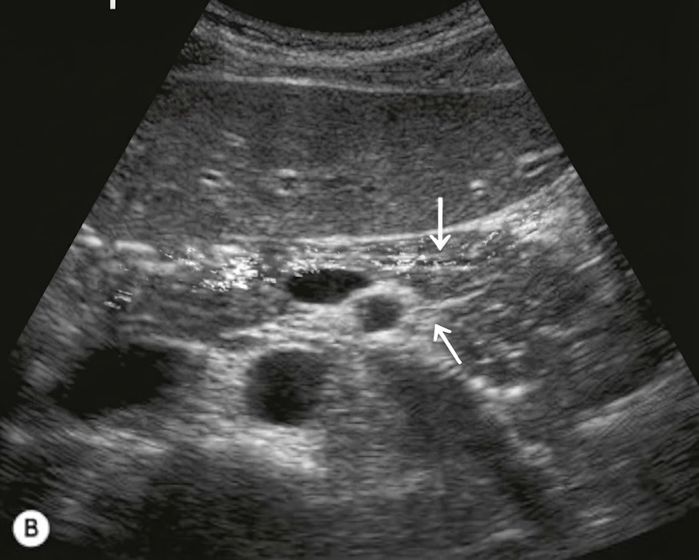
Tap a test for its job.
The lipase is back and the pain fits
“Shall we CT him to confirm?”
- No CT. With the pain and the enzyme, CT is “not usually required for diagnosis” on admission.
- CT is not advised in the first 48 hours unless the diagnosis is uncertain. Early CT did not improve outcomes.
- Good reasons for CT: doubt about the diagnosis (a perforation, bowel losing its blood supply), or no improvement at 48 to 72 hours.
- To look for dead tissue (necrosis), the best time is 72 to 96 hours after the pain began.
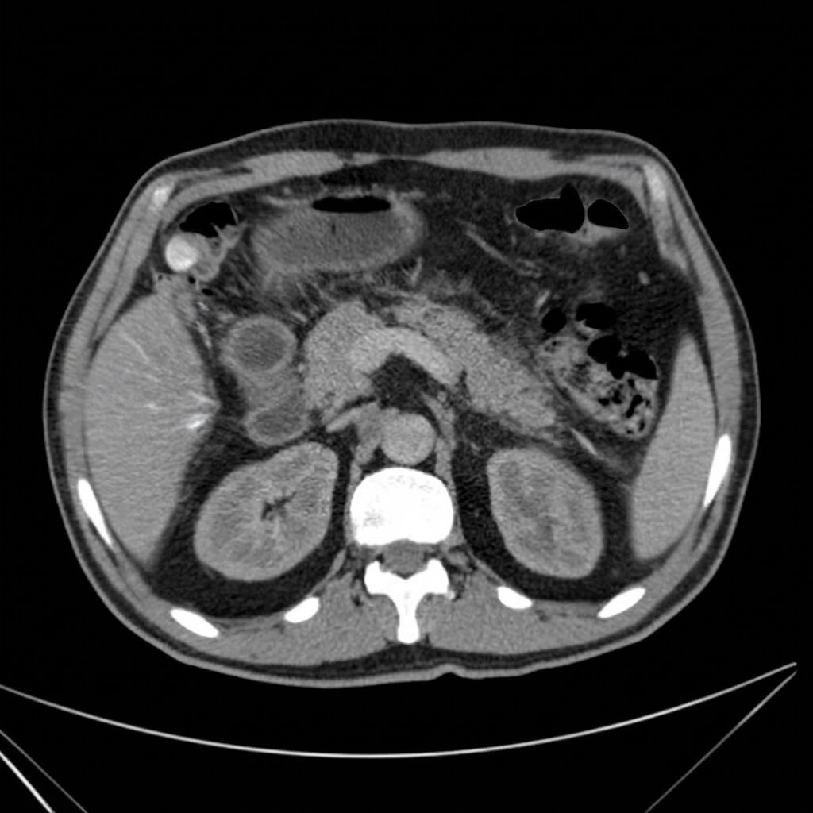
07:40 · not yet gradable
Severity is graded on organ failure and how long it lasts, so Dean could not be graded at 07:40.
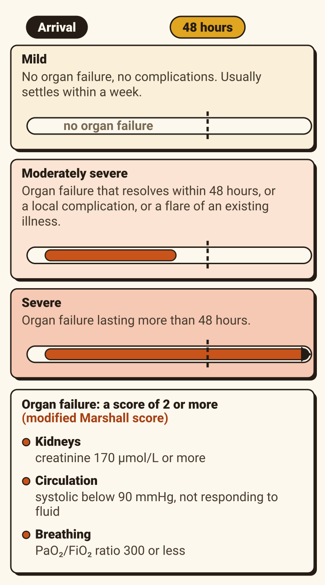
- Under-filled, Dean would have become moderately severe: organ failure that resolves within 48 hours.
- 80 to 85% of attacks are mild, with a death rate of 1 to 3%. About 20% are moderately severe or severe, with a death rate of 13 to 35%.
SIRS: three of four by the first bloods
Look for SIRS now. Most scores need 48 hours.
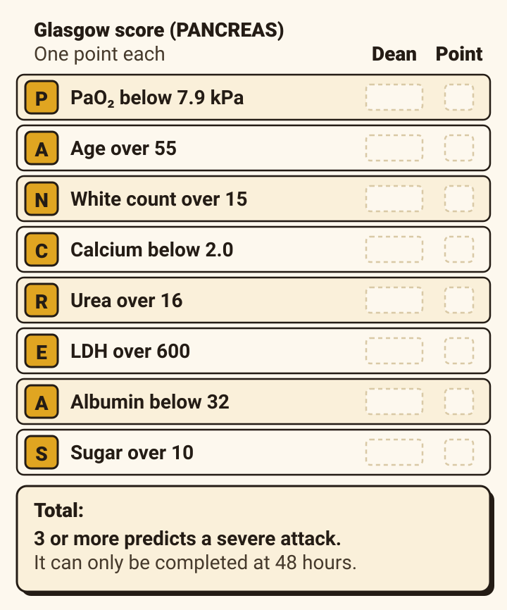
- SIRS is two or more of: pulse over 90; temperature below 36 or above 38 °C; white count below 4 or above 12; breathing over 20 (or pCO₂ below 32 mmHg). Dean: pulse 118, breathing 22, white count 14.2. His 37.8 °C does not count.
- SIRS on admission, and still present at 48 hours, predicts a severe attack. Persistent SIRS: 25% died, against 8% when it passed.
- Glasgow, Ranson and APACHE II can only be completed after 48 hours. No score beats watching for persistent SIRS.
The first hours
The first hours, on one picture.
Go to: fluid · pain and sickness · feeding · the cause · calcium.
- No prophylactic antibiotics: the fever and the CRP are the inflammation.
Who looks after him is the admitting team.
78 kg
Moderate fluid, not a flood.
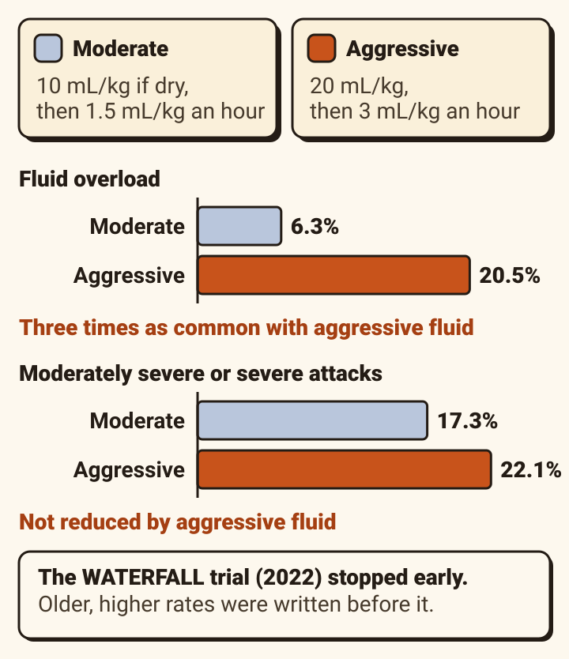
- Hartmann’s is preferred; 0.9% sodium chloride is acceptable.
- If he is dry: a bolus of 10 mL/kg, or 500 mL over less than 15 minutes. Then about 1.5 mL/kg an hour.
- Reassess within 6 hours, then through 48: pulse, blood pressure, urine, a falling urea.
Pain 9 out of 10 · still vomiting
Treat the pain properly, and pick an antiemetic that leaves the QT alone.
Swipe to see the whole film.
- Opioids (morphine or fentanyl) are the most used. No restriction on any painkiller is supported, and everyone should have pain relief within 24 hours.
- Cyclizine 50 mg IV, up to three times a day. The BNF lists no QT caution for it.
- Ondansetron lengthens the QT, more with higher doses. Correct a low potassium and magnesium first, and take care with any QT risk. Dean’s QTc was 510 ms, potassium 3.4, magnesium 0.44.
When the vomiting settles
Feed him as soon as he can eat. Starving the gland does not rest it.
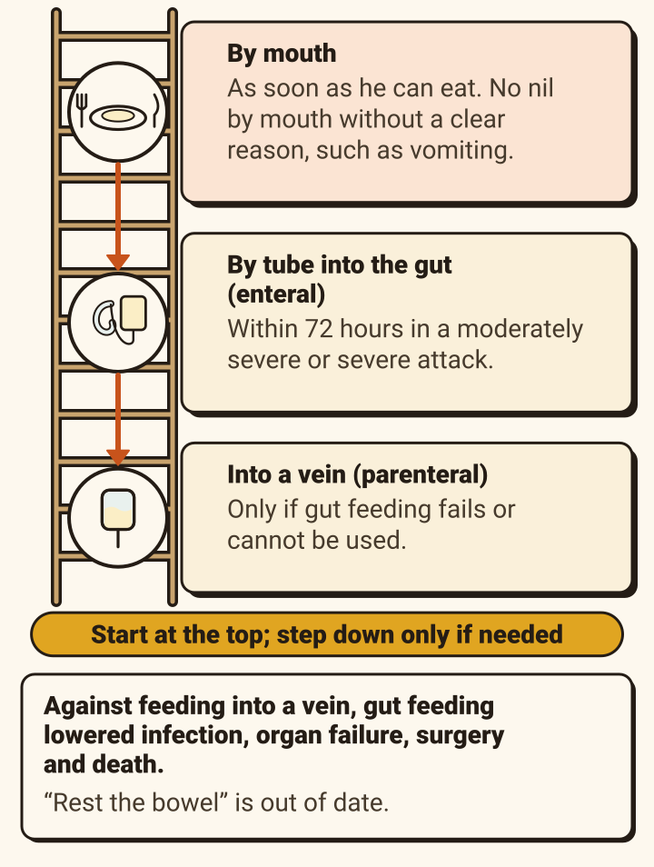
NICE: do not keep people nil by mouth without a clear reason, such as vomiting. In moderately severe or severe attacks, food by tube into the gut starts within 72 hours.
About 18 hours from his last drink
Treat the cause. For Dean, the alcohol.
- Advise him to stop drinking.
- Offer thiamine into a vein, then by mouth: he is a harmful drinker, poorly nourished, admitted with an acute illness.
- Withdrawal in hospital: a symptom-triggered regimen, with a tool such as CIWA-Ar, and a benzodiazepine. Benzodiazepines, thiamine, folic acid and multivitamins are generally used.
- Follow-up and contact with alcohol services help to prevent another attack.
- For gallstones, see card 6.
Days, weeks, months
Most recover in a week. The early danger is the whole body; the later danger is the gland.
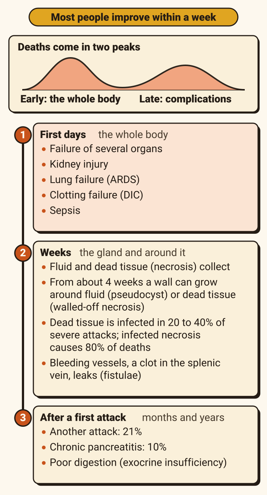
Gas outside the bowel on CT means infection of the dead tissue is presumed.
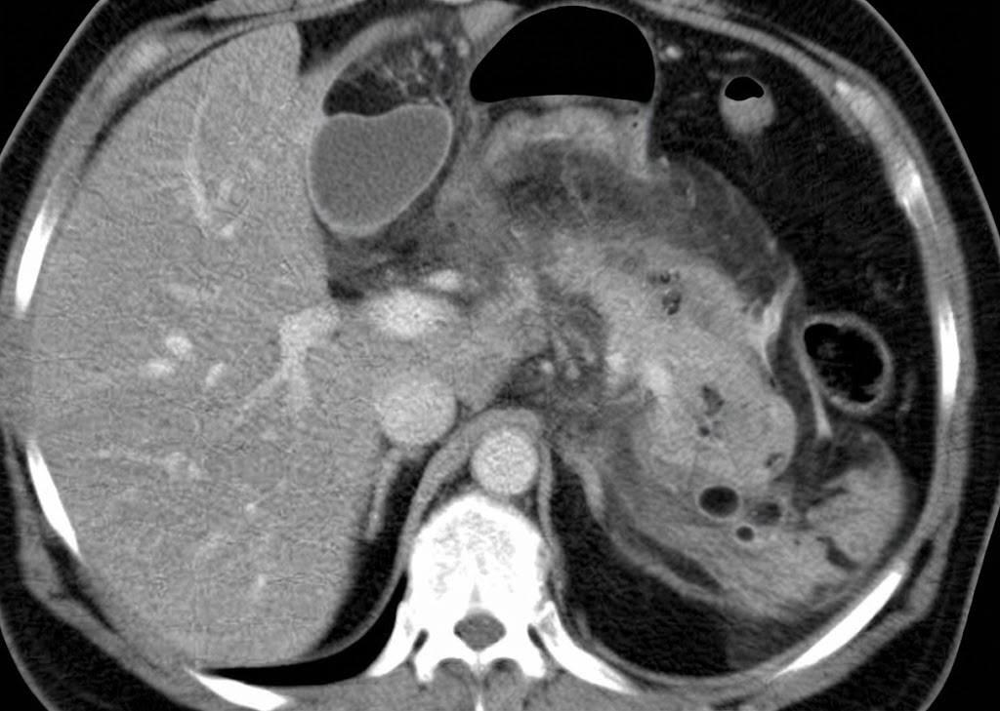
Adjusted calcium 1.62 · magnesium 0.44
His calcium fell because fat round the gland soaks it up, and his low magnesium stopped the body putting it back.
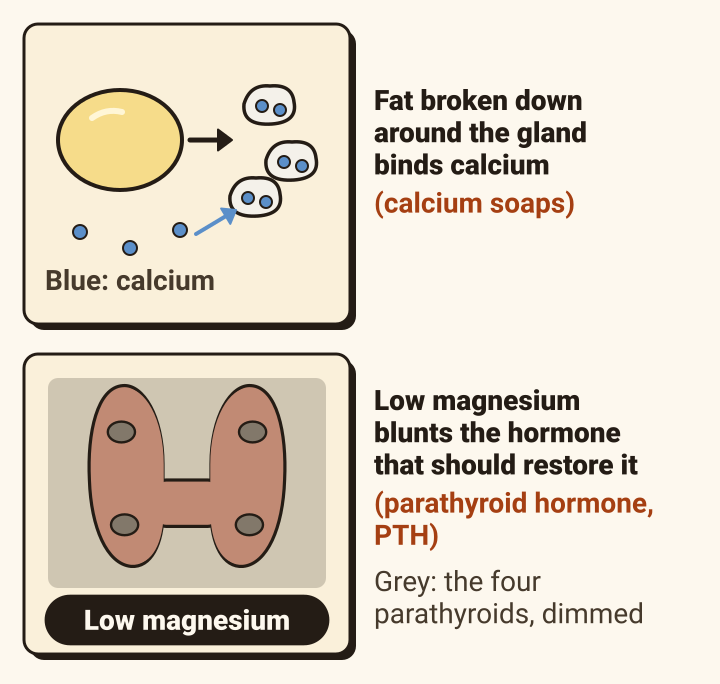
- Early in pancreatitis, calcium falls partly because fat broken down around the gland binds it (calcium soaps).
- Low magnesium blunts the parathyroid hormone that should restore the calcium. His PTH came back “normal” at 3.2 while his calcium was 1.62: too low for that calcium.
- So his calcium fell sooner than the pancreas alone explains. The drinker’s background explains the speed.Our reasoning
- Debrief 2 tells the rest.
What the morning showed
The pain and one blood test made the diagnosis. The rest was finding the cause and keeping him out of trouble.

The pain and an enzyme made it. The ultrasound looked for the cause, and the drinking was it. With moderate fluid he stays out of organ failure.
Take home
- Two of three: the pain, an enzyme over three times normal, imaging.
- CT answers a question. It does not prove the diagnosis.
- Grade by organ failure over 48 hours. Watch for SIRS.
- Moderate fluid, early food, no antibiotics.
- Find the cause and treat it.
Where this comes from.
The sources this page is built from
- Goodchild G, Chouhan M, Johnson GJ. Practical guide to the management of acute pancreatitis. Frontline Gastroenterology 2019;10:292–299. doi:10.1136/flgastro-2018-101102
- NICE. Pancreatitis (NG104). nice.org.uk/guidance/ng104
- NICE Clinical Knowledge Summaries. Pancreatitis – acute (last revised May 2021). cks.nice.org.uk/topics/pancreatitis-acute
- Geeky Medics. Acute pancreatitis. geekymedics.com
- BSPGHAN. Guidelines for the diagnosis and management of pancreatitis in children, v1.0 (January 2024). Background only.
Primary sources, used where those are silent
- Banks PA, et al. Classification of acute pancreatitis 2012: revision of the Atlanta classification. Gut 2013;62:102–111. doi:10.1136/gutjnl-2012-302779
- de-Madaria E, et al. Aggressive or moderate fluid resuscitation in acute pancreatitis (WATERFALL). N Engl J Med 2022;387:989–1000. doi:10.1056/NEJMoa2202884
- Tenner S, et al. American College of Gastroenterology guidelines: management of acute pancreatitis. Am J Gastroenterol 2024;119:419–437. doi:10.14309/ajg.0000000000002645
- Leppäniemi A, et al. 2019 WSES guidelines for the management of severe acute pancreatitis. World J Emerg Surg 2019;14:27. doi:10.1186/s13017-019-0247-0
- NICE. Intravenous fluid therapy in adults in hospital (CG174). nice.org.uk/guidance/cg174
- NICE. Alcohol-use disorders: physical complications (CG100). nice.org.uk/guidance/cg100
- MHRA. Ondansetron for intravenous use: dose-dependent QT interval prolongation. Drug Safety Update. gov.uk. BNF: cyclizine, ondansetron.
- Ahmed A, et al. Hypocalcemia in acute pancreatitis revisited. Indian J Crit Care Med 2016;20:173–177. doi:10.4103/0972-5229.178182
- Freiburghaus AU, Roduner J, Hadorn HB. Activation of human pancreatic proteolytic enzymes: the role of enteropeptidase and trypsin. JPGN Reports 2021;2(4):e138. doi:10.1097/PG9.0000000000000138
- Orekhova A, et al. Evolutionary expansion of polyaspartate motif in the activation peptide of mouse cationic trypsinogen. Am J Physiol Gastrointest Liver Physiol 2021;321:G719–G734. doi:10.1152/ajpgi.00265.2021
Guidelines change. Checked October 2026.